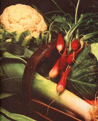
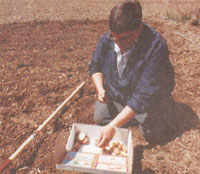
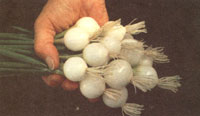
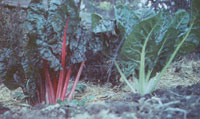
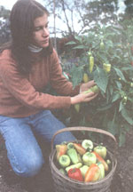
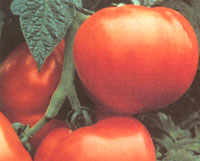
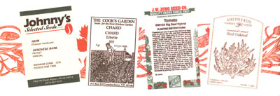

GARDEN AND YARD
Don't to miss your; chance to save $$ getting in a second fall harvest. Plant twice and double your yields.
There are a great many reasons most folks don't even consider second cropping. It's my experience that preparing a garden for sec ond crops can be nearly as time consuming an activity as preparing for the spring planting; therefore, it's often easier just to forget the whole thing. Additionally, many gardeners get discouraged with second cropping because so many of the varieties that do well earlier in the year just don't perform well in the heat of summer. As we'll discuss later, there are a great many varieties available now that weren't available even a decade ago. Many of those are more heat- and drought-resistant than older standbys so long favored by home gardeners, and promise a late-season harvest which will keep you in delicious produce all winter long. For example, I love a good buttery head of Bibb lettuce in August just as much as I do in May. Why not? Missing a chance to plant again is an opportunity squandered and grocery money wasted, and there are many ways to make the process much less of a chore.
I live in the highlands of eastern Kentucky, a region of generally mild winters but often hot and humid summers. Spring can start early here and frost can come late-though neither is a given. We usual don't have freezes after mid-April or bet'" mid-October. There are often light frosts ter and before those dates, but rarely are firs severe enough to destroy any but the most tender of crops.
Like most areas, we start here early with the cold hardy crops such as peas, lettuce, and onions. From there we progress to other hardy veggies such as beets and carrots. By that time it's soon warm enough to start your heat lovers such as beans and corn. It is at that point that second cropping can really be used advantageously. One point first: I find it easier to clean crops as I go. By that I mean as soon as one is finished, compost what's left or plow it in, know what you want to plant, and then be ready. Choosc sites for crops and varieties accordingly. Some thrive in the shade, others need full sun, though in the summer some shade and a lot of watering might be required for those sun worshippers. I've done some pretty strange things to get crops out of season.
But what varieties to plant, you ask? Let's take a look at a typical season in a typical garden in mid-America Most of us will start, as mentioned before, in March with salad fixings such as lettuce, onions, and radishes. By all accords, most anyone can get lettuce to grow at that time of the year. I've long depended on Shepherd Seeds for lots of my salad makers. For about a hundred years, it seems, folks in my area have been growing Black Seeded Simpson, and a fine variety it is. It just doesn't do well in hot weather, bolting to seed rather easily.
Shepherd Seeds introduced me to some really delicious loose-leaf varieties, namely Lollo Rossa. To be honest, this Italian loose leaf is almost too pretty to eat. Almost. Eating quality is fleeting, though, so Lollo Rossa has to be planted at intervals of 10-14 days to maintain top quality. Bolt resistance is fair, and this Italian beauty can be grown well in the summer if some shade and ample moisture are provided.
Shepherd Seeds is always on of the prowl for new varieties, and lettuce is a specialty of theirs. For years, Salad Bowl has been one of the leading bolt-resistant varieties. While not nearly as popular as Black Seeded Simpson in our area, Salad Bowl-substantially more bolt-resistant than the Simpson types-has always been a special favorite of mine.
I was delighted when I finally found an improved Salad Bowl-type available, called Red Oak Leaf. It is truly a gourmet's delight and is one of the most heat resistant of all varieties. Plant it in June and enjoy it for most of the remainder of the summer. Plant another crop by August and it'll grow right into the chill of October.
Those aren't your only lettuce choices, though. I mentioned the Bibbs earlier, and Shepherd has lots of them, both Bibbs and butterheads. They differ in that the Bibbs form looser heads. Both offer a range of varieties that include the very best qualities to be had in the lettuce family.
I especially like Mantilla, a true European butterhead. The lovely round heads contain tender hearts of matchless quality. Planted in June, Mantilla can be ready for harvest by early August. Bred to be bolt-resistant, it is perfect for second cropping. As with all lettuce grown in hot weather, some shade and ample moisture make for an extended harvest and optimum quality.
In these parts, few lettuce beds are planted without the accompaniment of a row or two of onions. They are a piece of cake in the spring, but can be a little tricky in the summer. As you probably know, onions bulb according to day length. Most folks I know prefer green onions with fresh lettuce. That can be accomplished. Let's talk about it.
Johnny's Selected Seeds has been a favorite source for quality seeds for a great many years, and they offer two "mini" onions especially adapted for summer. Their Snow Baby and Purplette neatly fill the bill between early green onions and mature bulbs of late summer. Planted in early June, they will make mini-bulbs by mid-summer. Onions are not difficult to grow from seed, as long as you keep in mind that at least an inch of water per week is needed for good germination and uninterrupted growth.
Snow Baby makes a lovely "pearl" in two months and can be harvested for some time thereafter. The waxy snow-white minibulbs are a tasty delight. They go well with the gorgeous red frilly leaves of Red Oak Leaf or Lollo Rossa lettuce, just as the pretty purple bulblets of Purplette make a most attractive salad when mixed with the exquisite Mantilla butterhead. You are going to have to wait until next year to ask Johnny's about Purplette, however, as they have sold their entire stock for the year. But for those of you who simply can't wait, I recently found an excellent substitute that Stokes carries, the Red Beard onion. Try them both and write us at MOTHER. We'll pass the results along.
Another salad fixin' most people love to plant early is the radish. Their tangy goodness is a super addition to the salad bowl and there are numerous varieties available, nearly all of which bolt rapidly in hot weather. There are options, however, if you want to keep them coming all throughout the summer. It seems that there are about a million varieties available, a few of which are bolt-resistant. In the past few years, I've settled on two varieties for succession cropping. Both are offered by Pinetree Seeds. Their Revosa is a rapidly maturing bright red, round radish that retains its quality even into the heat of July and August. Quality is superb. Flavor is sharp and texture remains crisp for up to three weeks. Just keep planting them every two or three weeks and have them all summer.
The other radish I like for June planting is Black Spanish. It is not your typical quick-maturing type. It's been cultivated for centuries and takes up to 70 days to reach full maturity. I like to plant a few in June for maturity in September. The deep purple-nearly black roots mature to about one pound but can be harvested earlier. Most often boiled like turnips when mature, the smaller roots can be harvested and used like typical radishes. Flavor tends to be mild but retains the bite.
Going in a little different direction, let's take a quick gander at some of the more popular "greens" that can be successfully second cropped. Not so many years ago, greens were only grown in the spring or fall. Now, there are many bolt-resistant strains. One can grow greens that are the envy of the neighborhood all summer long.
Stokes Seeds lists many of those bolt-resistant strains. Spinach has always been one of the favorites of home gardeners, and the past few years have seen the introduction of many fine heat-tolerant varieties. Olympia is the most bolt-resistant spinach I've ever grown. Stokes claims it to last several days longer than Melody, one of the best-known varieties. Olympia is super for fresh use, canning, or freezing.
Olympia is the smooth-leaf type. Many folks prefer the Savoy or wrinkled-leaf varieties. If so, your choice could easily be Tyee, offered by Pinetree. Tyee is a Savoy favored by many for sweeter taste. Just as the Savoy cabbages are said to be the best eating, Savoy spinach is also esteemed. Admittedly, Tyee is a little harder to clean and prepare, but worth it, believe me.
Before there were bolt-resistant varieties, many gardeners grew a spinach substitute called tetragonia or New Zealand spinach. Not a true spinach, tetragonia does have a sweet spinach-like taste and can be harvested all summer. It should be noted that tetragonia seeds are large and nut-like and should be soaked overnight to hasten germination. Johnny's and Stokes are two sources for tetragonia.
One doesn't have to be limited to spinach as a source for summer greens. Now there are all sorts of heat-tolerant varieties such as kale and collards. The latter has long been a Southern favorite, so it's not surprising there would be varieties that can withstand heat. Park Seeds, one of the oldest and most revered of the Southern seed houses, offers Top Bunch, one of the best of the new varieties of collards.
For the life of me, I can't see why more people in the north don't grow collards. If you like greens, you're only doing yourself an injustice by not growing them. Really, they are almost foolproof. Top Bunch is a perfect example. The heavily "savoyed" leaves are sweet and quite mild and grow back very quickly after being picked.
Your choices are going to be reduced a bit if your taste buds veer into the kale fam ily. There just aren't many bolt-resistant varieties. One I've managed to find is Stoke's Squire. Bred for heat tolerance, Squire will outyield Vates, the standard variety, by up to 80 percent. Quality is excellent and makes Squire a perfect choice for summer. Long before bolt-resistant strains of the more commonly grown greens were developed, chard was used as a summer substitute. The chard is nothing more than a beet without the edible root, and there are many excellent varieties to choose from. A personal favorite is Cook's Garden's Erbette, a true cut-and-come-again variety. The smooth, fine-tasty greens make an ideal spinach substitute. Ledden's Seeds offers the lovely Ruby Red, an old favorite as lovely to look at as it is to eat. The bright red leaves cook up tender and delicious, and it can be cut over and over again.
The final green I'd like to mention is Chinese cabbage. This Oriental-type vegetable, not as well known or as widely grown as the others mentioned here, makes a nice addition to the second-crop garden. Not so long ago there were few, if any, that resisted bolting, but time means progress, and now we have the luxury of a few varieties that are tasty and easily grown in summer. I like to think of Chinese cabbage as a type of lettuce that has a mustardy tangreally quite refreshing. Two I like are Summer Top and Blues, both from Johnny's. Summer Top matures about a week ahead of Blues. Neither can be faulted for quality. Both are sweet and buttery additions to the table.
Succession crops need not be limited to leaf vegetables. There are lots of others that can be planted more than once. Believe it or not there are even a few varieties of peas that have been hybridized to resist heat.
Of course, the standard pea used to resist the heat of summer has been Wando. That's not to say you can sow Wando in June or July and harvest fresh peas in a couple of months. Not so! But managed properly, peas can be harvested weeks later than usual. In addition, these new varieties can be planted in late summer for full harvest.
The advantage to heat-tolerant peas is mainly that they can be planted up to a month later than normal, allowing for later harvest, possibly into July and August. In more northern climates, this is entirely possible with Wando. It can be done in my area if ample moisture and proper location are selected. I can plant Wando in a shaded area and give lots of water and get a July crop. That's not the norm, but it's possible.
Plant breeders have been working on heat-tolerant peas, and one very acceptable one is Top Pod, usually offered by Pinetree but also carried by Jung's. The sweet, juicy peas are still top quality, even if harvested in July. While not recommended for latespring planting, one of the few sugar peas that will thrive in the fall is Oregon Sugar Pod II. Nichol's Garden Nursery has available this wonderful sugar pea. Called "salad peas" in our area, most folks here disdain any thought of fall sowing. There's a reason for that. Until now, it was nearly impossible to get a decent crop. Oregon Sugar Pod II kicks into high gear as soon as cool nights arrive, though, and should bring a fine crop of crunchy sweet pods.
Of course, most other vegetables can be planted and harvested more than once. We all know that things like beans and sweet corn are garden staples, and their replantability is one reason why it's so.
Others are more likely, for one reason or another, to be planted only once. Even if that is the case, many of those will still grow and produce if a June/early July planting is chosen.
In my mountain haven, sweet potatoes are often planted around Memorial Day. With some of the newer, earlier-maturing varieties available, folks in mid-America could wait until June 15th, or even a little later, and still get a good crop.
I've always found Jung Seed a great source for seeds and plants, and they list two really fine early-maturing sweet Potatoes that are very reliable shortseason croppers. While there are others, the two I favor are Georgia Jets and Beauregard.
Georgia lets is bright red and has a moist, delicious flesh. Beauregard is light red with a tender, light flesh. Both are exceptional.
While potatoes aren't generally considered a hot-weather crop, Jung has one that will do quite well under dry conditions. Give their Langlade a shot if you can't irrigate. It should still produce a decent harvest of oblong, attractive tubers.
Okra is one of the easiest crops to grow, period. It'll grow just about anywhere, even in the heat of summer. Try it as a second crop after early favorites such as lettuce or peas. Check with Pinetree for their new Green Best. Okra just doesn't get much better than this. It literally adapts to most any climate and puts on a show for weeks, if fruit is kept picked.
As I scan my list of personal favorites that grow well during "dog days," I do want to highlight a few.
Peppers are a perennial favorite and just about any will grow in summer's heat. Follow a nice patch of early greens with a few pepper plants, both sweet and hot. I make a lot of homemade salsa, and we use lots of both. If a tasty, sweet bell is what you like, North Star is as reliable as they come. Its stocky plants are among the heaviestbearing of all. The short, blocky fruits mature to a dazzling crimson. It's a dandy.
Hot peppers don't get much better than Surefire. Being a hot banana-type, you know it'll be a heavy producer. It's hot but not dangerously hot, and really delicious. Both North Star and Surefire are about as reliable as peppers can be. Both are available from Seedway.
I suppose tomatoes are America's favorite-and for good reason. We're living in an age when truly amazing tomatoes are available. For years I've looked to Better Boy as the standard for good eating. Now that honor may be challenged. I'm tempted to lay that distinction on Big Beef, but don't give up on Better Boy. It's still full of good old-fashioned tomato flavor. Big Beef is bigger and possibly even more disease-resistant. Some claim it is the best tomato ever.
Another new tomato of great acclaim is Crimson Fancy. It may be the easiest to grow and the most dependable of all varieties. Fruits are sweet and delicious. Crimson Fancy and Big Beef are both offered by Jung Seed.
Just remember: Choose your varieties judiciously, select suitable sites, be ready to provide plenty of water and you'll still be crunching into summer's best well into winter.
|
 Walter Chandoha Jung Seed now offers Crimson Fancy, perhaps the easiest to grow and most dependable of all tomato varieties. |
 BY RHONDA SIMPSON Let the seed packets do the work for you. Their instructions will take much of the guesswork out of planting |
 |
|
 |
|
 |
|
 |
 |
|